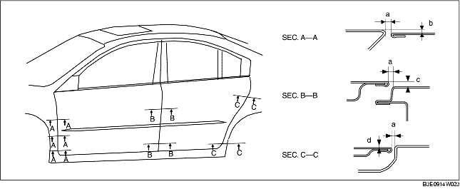

REGLAGE DE PORTIERE
B3E091158010W04
1. Mesurer l'écart et la différence de hauteur entre la portière avant ou arrière et la carrosserie.
2. Desserrer les boulons de fixation de la charnière de portière ou les vis de fixation du pêne de serrure de portière, et régler la portière.
-
Jeu standard
-
a : 2,7-4,7 mm {0,11-0,18 in}
-
b (haut) : -1,0-1,0 mm {-0,040-0,039 in}
-
b (médian) : -0,5-1,5 mm {-0,020-0,059 in}
-
b (bas) : -0,3-1,3 mm {-0,027-0,051 in}
-
c (haut) : -1,0-1,0 mm {-0,040-0,039 in}
-
c (bas) : -0,5-1,5 mm {-0,020-0,059 in}
-
d (haut) : -1,0-1,0 mm {-0,040-0,039 in}
-
d (bas) : -0,5-1,5 mm {-0,020-0,059 in}

3. Serrer les boulons ou les vis.